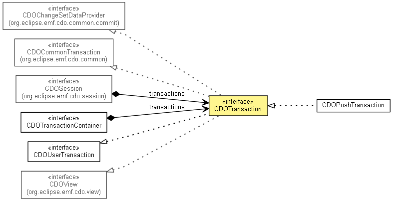

org.eclipse.emf.cdo.transaction
Interface CDOTransaction
- All Superinterfaces:
- CDOBranchPoint, CDOChangeSetDataProvider, CDOCommitHistory.Provider<CDOObject,CDOObjectHistory>, CDOCommonTransaction, CDOCommonView, CDOLockOwner, CDORevisionProvider, CDOTimeProvider, CDOUpdatable, CDOUserTransaction, CDOView, Closeable, IAdaptable, IContainer<CDOResourceNode>, INotifier, IOptionsContainer
- All Known Subinterfaces:
- InternalCDOTransaction
- All Known Implementing Classes:
- CDOPushTransaction
- public interface CDOTransaction
- extends CDOView, CDOCommonTransaction, CDOUserTransaction, CDOChangeSetDataProvider

A read-write view to the current (i.e. latest) state of the object graph in the repository.
- Since:
- 2.0
- No Implement
- This interface is not intended to be implemented by clients.
- No Extend
- This interface is not intended to be extended by clients.
|
Method Summary |
void |
addTransactionHandler(CDOTransactionHandlerBase handler)
|
CDOBinaryResource |
createBinaryResource(String path)
|
CDOQuery |
createQuery(String language,
String queryString,
boolean considerDirtyState)
|
CDOQuery |
createQuery(String language,
String queryString,
Object context,
boolean considerDirtyState)
|
CDOResource |
createResource(String path)
|
CDOResourceFolder |
createResourceFolder(String path)
|
CDOTextResource |
createTextResource(String path)
|
CDOSavepoint[] |
exportChanges(OutputStream out)
|
String |
getCommitComment()
Returns the comment to be used in the next commit operation. |
Set<? extends EObject> |
getCommittables()
|
Set<CDOObject> |
getConflicts()
|
Map<CDOID,CDOObject> |
getDetachedObjects()
|
Map<CDOID,CDOObject> |
getDirtyObjects()
|
CDOSavepoint |
getFirstSavepoint()
|
long |
getLastCommitTime()
|
CDOSavepoint |
getLastSavepoint()
|
Map<CDOID,CDOObject> |
getNewObjects()
|
CDOBinaryResource |
getOrCreateBinaryResource(String path)
|
CDOResource |
getOrCreateResource(String path)
|
CDOResourceFolder |
getOrCreateResourceFolder(String path)
|
CDOTextResource |
getOrCreateTextResource(String path)
|
Map<CDOID,CDORevisionDelta> |
getRevisionDeltas()
|
CDOTransactionHandler[] |
getTransactionHandlers()
|
CDOTransactionHandler1[] |
getTransactionHandlers1()
|
CDOTransactionHandler2[] |
getTransactionHandlers2()
|
boolean |
hasConflict()
Returns true if this transaction contains local modifications that are conflicting with remote
modifications, false otherwise. |
CDOSavepoint[] |
importChanges(InputStream in,
boolean reconstructSavepoints)
|
boolean |
isDirty()
Returns true if this transaction is not closed and contains uncommitted changes, false
otherwise. |
CDOChangeSetData |
merge(CDOBranchPoint source,
CDOBranchPoint sourceBase,
CDOMerger merger)
|
CDOChangeSetData |
merge(CDOBranchPoint source,
CDOMerger merger)
|
CDOTransaction.Options |
options()
Returns the options of this view. |
void |
removeTransactionHandler(CDOTransactionHandlerBase handler)
|
void |
setCommitComment(String comment)
Sets the comment to be used in the next commit operation. |
void |
setCommittables(Set<? extends EObject> committables)
|
CDOSavepoint |
setSavepoint()
Creates a save point in the CDOTransaction that can be used to roll back a part of the transaction
Save points do not involve the server side, everything is done on the client side. |
| Methods inherited from interface org.eclipse.emf.cdo.view.CDOView |
addObjectHandler, compareRevisions, createQuery, createQuery, disableDurableLocking, enableDurableLocking, enableDurableLocking, getBinaryResource, getObject, getObject, getObject, getObjectHandlers, getResource, getResource, getResourceFolder, getResourceNode, getResourceSet, getRootResource, getSession, getTextResource, getURIHandler, getViewSet, hasResource, isInvalidationRunnerActive, isLegacyModeEnabled, isObjectRegistered, lockObjects, lockObjects, queryResources, queryResourcesAsync, queryXRefs, queryXRefs, queryXRefsAsync, reload, removeObjectHandler, setBranch, setBranchPoint, setBranchPoint, setResourcePathCache, setTimeStamp, unlockObjects, unlockObjects, unlockObjects |
isDirty
boolean isDirty()
- Returns
true if this transaction is not closed and contains uncommitted changes, false
otherwise.
- Specified by:
isDirty in interface CDOView
- See Also:
isDirty()
hasConflict
boolean hasConflict()
- Returns
true if this transaction contains local modifications that are conflicting with remote
modifications, false otherwise.
- Specified by:
hasConflict in interface CDOView
- See Also:
hasConflict()
getConflicts
Set<CDOObject> getConflicts()
merge
CDOChangeSetData merge(CDOBranchPoint source,
CDOMerger merger)
- Since:
- 3.0
merge
CDOChangeSetData merge(CDOBranchPoint source,
CDOBranchPoint sourceBase,
CDOMerger merger)
- Since:
- 4.0
createResourceFolder
CDOResourceFolder createResourceFolder(String path)
- Since:
- 4.0
getOrCreateResourceFolder
CDOResourceFolder getOrCreateResourceFolder(String path)
- Since:
- 4.0
createResource
CDOResource createResource(String path)
- See Also:
ResourceSet.createResource(URI)
getOrCreateResource
CDOResource getOrCreateResource(String path)
createTextResource
CDOTextResource createTextResource(String path)
- Since:
- 4.2
getOrCreateTextResource
CDOTextResource getOrCreateTextResource(String path)
- Since:
- 4.2
createBinaryResource
CDOBinaryResource createBinaryResource(String path)
- Since:
- 4.2
getOrCreateBinaryResource
CDOBinaryResource getOrCreateBinaryResource(String path)
- Since:
- 4.2
addTransactionHandler
void addTransactionHandler(CDOTransactionHandlerBase handler)
- Since:
- 4.0
removeTransactionHandler
void removeTransactionHandler(CDOTransactionHandlerBase handler)
- Since:
- 4.0
getTransactionHandlers
CDOTransactionHandler[] getTransactionHandlers()
- Since:
- 3.0
getTransactionHandlers1
CDOTransactionHandler1[] getTransactionHandlers1()
- Since:
- 4.0
getTransactionHandlers2
CDOTransactionHandler2[] getTransactionHandlers2()
- Since:
- 4.0
setSavepoint
CDOSavepoint setSavepoint()
- Description copied from interface:
CDOUserTransaction
- Creates a save point in the
CDOTransaction that can be used to roll back a part of the transaction
Save points do not involve the server side, everything is done on the client side.
- Specified by:
setSavepoint in interface CDOUserTransaction
- Since:
- 3.0
getFirstSavepoint
CDOSavepoint getFirstSavepoint()
- Since:
- 4.1
getLastSavepoint
CDOSavepoint getLastSavepoint()
- Specified by:
getLastSavepoint in interface CDOUserTransaction
- Since:
- 3.0
getNewObjects
Map<CDOID,CDOObject> getNewObjects()
getDetachedObjects
Map<CDOID,CDOObject> getDetachedObjects()
- Since:
- 2.0
getDirtyObjects
Map<CDOID,CDOObject> getDirtyObjects()
getRevisionDeltas
Map<CDOID,CDORevisionDelta> getRevisionDeltas()
exportChanges
CDOSavepoint[] exportChanges(OutputStream out)
throws IOException
- Throws:
IOException- Since:
- 3.0
importChanges
CDOSavepoint[] importChanges(InputStream in,
boolean reconstructSavepoints)
throws IOException
- Throws:
IOException- Since:
- 3.0
getLastCommitTime
long getLastCommitTime()
getCommitComment
String getCommitComment()
- Returns the comment to be used in the next commit operation.
- Since:
- 3.0
- See Also:
CDOCommitInfo.getComment()
setCommitComment
void setCommitComment(String comment)
- Sets the comment to be used in the next commit operation.
- Since:
- 3.0
- See Also:
CDOCommitInfo.getComment()
setCommittables
void setCommittables(Set<? extends EObject> committables)
- Since:
- 4.0
getCommittables
Set<? extends EObject> getCommittables()
- Since:
- 4.0
createQuery
CDOQuery createQuery(String language,
String queryString,
boolean considerDirtyState)
- Since:
- 4.0
createQuery
CDOQuery createQuery(String language,
String queryString,
Object context,
boolean considerDirtyState)
- Since:
- 4.0
options
CDOTransaction.Options options()
- Description copied from interface:
CDOCommonView
- Returns the
options of this view.
- Specified by:
options in interface CDOCommonView- Specified by:
options in interface CDOView- Specified by:
options in interface IOptionsContainer
Copyright (c) 2011, 2012 Eike Stepper (Berlin, Germany) and others.